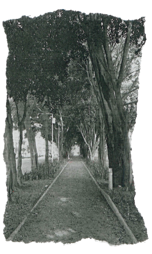
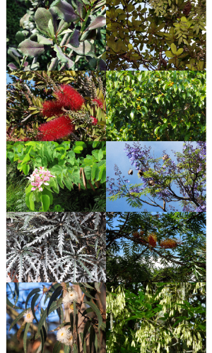

ESTRATOS
¿Cómo entendemos la corporalidad del territorio?
Estratos es un ejercicio de imaginación,
centrando al peatón, y definiendolo
más allá de especie, podemos sintetizar
lo que un cuerpo necesita, y cómo lo buscamos
en nuestro trayecto.

